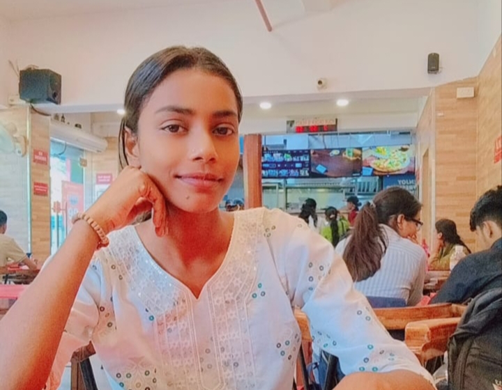

"From the banks of Prayagraj,— Shruti Gupta
building bridges with code."
Code Meets Creativity
I'm Shruti Gupta, a passionate BCA student at Rajju Bhaiya University with a NIELIT O Level certification. My journey into technology started with curiosity — and grew into a craft.
My academic roots go back to Lalchandra Jasra where I scored 80% in my High School (2023), and GGIC Jasra where I completed my Intermediate with PCM & CS in 2025.
I have a deep interest in web development — building sites that feel alive, look stunning, and tell real stories. I believe design and code are two sides of the same coin.
When I'm not coding, you'll find me exploring design trends, reading tech blogs, or dreaming up the next project that challenges my creativity. My goal is to become a full-stack developer and inspire others from smaller cities to dream bigger in tech.

Education
The milestones that shaped who I am today.
🎓 High School — 10th
Lalchandra Jasra, UP Board
Scored 80% — Scholar Excellence Award
UP Board · Science📖 Intermediate — 12th
GGIC Jasra, UP Board
Scored 70% — PCM with Computer Science
UP Board · PCM + CS💻 O Level — NIELIT
ASIT Institute, Gauhaniya
Foundation of IT, Programming & Computer Applications
NIELIT Certified🚀 BCA — Bachelor of Computer Applications
Rajju Bhaiya University, Prayagraj
Web Development, Modern Technologies & Software Engineering
BCA · OngoingMy Strengths
Hard Working
Committed to putting in every effort needed to achieve my goals.
Leadership
Ability to guide and motivate others toward achieving shared objectives.
Quick Learner
Adapts to new technologies and concepts rapidly and effectively.
Honesty
Committed to truthfulness and integrity in all professional dealings.